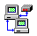

Most come complete with source code. They work on my computer. If they work on yours, you're welcome to them.
As if I knew how to organize it!
The beauty of doing things with DOS batch language is the inherent simplicity and elegance of the limited command set. There are few enough commands that anybody who has DOS can learn it. The challenge is in using these limited commands to accomplish whatever task you might dream up! Sure, anybody could solve your problem in "C", but where's the sport in that?
Windows
Scripting
Look -- It's way better than batch, it's standard with Windows 98,
it's free for Win95 and NT4, and I'm just getting started on it.
CommLink
I needed to hack a proprietary communications protocol, so I wrote
this. If you have two serial ports and have access to the target computer's
RS232 line, you can grab and analyze all the data. There are better ways
to do this now, but they weren't around when I wrote this...
CommTool
I kept locking up my serial ports and modem while writing comm programs.
I wrote this to forcibly take control of ports opened by the Win16 API
so I wouldn't keep having to reboot. The coolest thing is that it can change
port settings while another program is using that port (without knocking
the other program off!).
CRLF
I got tired of being on the losing end of the text differences between
the Unix, DOS, and Macintosh operating systems. I wrote a couple of utilities
so I could convert from anything to anything.
ExitWindows
Do you need to shut Windows down, log off, or reboot under program
control? Here is my solution.
FFIND
I used to be a big BBS guy. I wrote this to search BBS file descriptions,
but I've found it does great at searching data dumps from our communications
analyzers too!
Headers
I was writing a CGI program and was getting nowhere fast. The problem
seemed to be in my headers, but I had no way of looking at them or comparing
them with known good headers. Now I do! Now I can check out the otherwise
hidden headers in any web page or cgi I want.
NoFonts
Have you ever used Excel to create an HTML table? Did you ever wonder
why it was so big and took forever to load? This program removes all the
font info from an HTML table, reducing it's size to about 25% of what it
was.
Pong
Sure, pong for Excel 97. The little ball bounces around your spreadsheet
and you chase it with your paddle. Add it to any spreadsheet. Demonstrates
"callbacks" under VBA.
Pop3
Retrieve your email automatically. Or delete spam. Or kill modem-choking
big messages without downloading them. Run it standalone, from a DOS batch
file, from Windows Scripting or from VBA. The really cool thing is that
you can read messages in your normal mail program or read the same message
in several different mail programs at the same time.
ProbeMe!
Run a unique port probe on your own computer to see what Winsock ports
are in use and which are available.
FileCap
/ Prn2Pbm
I work with equipment which can print to a serial printer. But I have
no printer. With the FileCap program and a null modem, I can capture the
output from my equipment into a "prn" file. With the Prn2Pbm program, I
can convert the prn file into a usable graphics file.
Schedule
Automatically launch programs, scripts, or documents whenever you want.
No shareware nagging, no task bar clutter. Any combination of day, date,
month, etc.. How many other schedulers can launch a program every Friday
the 13th?
SetIni
A little utility I wrote to modify Windows INI files from DOS before
Windows comes up. It really cut down on the complaining Windows did when
the network wasn't there or some other fool problem.
Slideshow
Not just a slide show, it shows you several different ways you can
build a self-running slide show yourself. Handy to know when building training
modules for your intranet. The goal here is to make things so the user
doesn't have to have to have any special software and you don't have to
have any special server.
Tnef
I get stuck receiving file attachments from Outlook users who don't
know how to turn off the "application/ms-tnef" file encoding. So I wrote
this to help me pull files out of the otherwise useless mess that "ms-tnef"
is.
UnCheck
After a major crash, I found myself looking at lots of "FILE0001.CHK"
type files. After hours of trying to identify each one, I wrote this to
automate the process. It copies CHK files into whatever type they really
are.
WebGet
I needed a scheduled batch file to pull a file off the web each night.
It should have been simple. But it was a secure web server. Login required.
So I wrote WebGet (basically a wrapper for msinet.ocx) to allow me to get
whatever
I wanted. You can use it from a batch file or automate it from VBA or the
Windows Scripting Host
Word
Search & Replace
We had a zillion Word documents that needed several phrases and words
replaced. Word 97 VBA automated the whole thing.
Keep Those Windows 3.1 Disks Maybe you didn't realize what features you gave up. Your favorite Windows 3.1 programs will still run under Windows 95.
Plus! For Free Well, not quite. But I do want to let you know about Microsoft accidentally giving away the Plus! Theme Manager.
 I
Think You Are A Big Stupid Jerk At least that's what the macro
virus says when it activates! Here's how to undo the damage after you've
been disinfected.
I
Think You Are A Big Stupid Jerk At least that's what the macro
virus says when it activates! Here's how to undo the damage after you've
been disinfected.
File Opening Errors Having Office 97 guarantees that sooner or later you'll see a "could not be found" or "is already open" error message. Here's what to do about it.
About me It's a law. I think. Well, at least every personal page I know of has a self-serving gratuitous link to a mind-numbing collection of pictures and ramblings about the poor lifeless nerd who created the web page. Why should I be different? I mean, what if it really is a law?